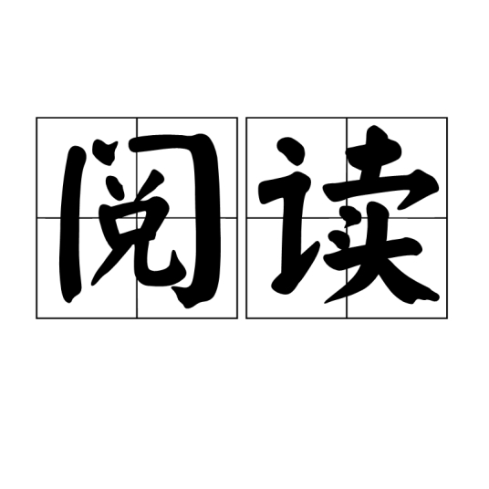
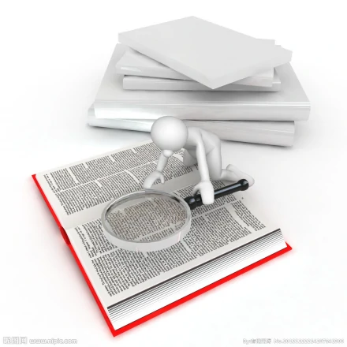

兴趣爱好-阅读

杨绛先生说过：“读书的意义大概就是用生活所感去读书，用读书所得去生活。”
阅读，给我们以丰富的讯息，使我们足不出户就通晓天下大事。阅读是不收卷的横幅山水，
使我们不必苦苦探索便了解洋洋历史。
书中的世界灿烂盛大，精彩纷呈。或许，这是我们填补内心空虚的最好方法。“
我们读书而后知道自己不孤单。”这是《岛上书店》中的一句话。读书不能保证你抵达理想
的彼岸，不能保证学以致用，但阅读不失为充实自己的良法。一个不读书的人内心是一座孤
岛，密不透风的高墙内囚禁着一个坐井观天而自视甚高的人。由此，读书的意义不言而喻。
生活里没有书籍，就好像没有阳光；智慧中没有书籍，就好像鸟儿没有翅膀。
知识是人类进步的阶梯，阅读则是了解人生和获取知识的重要手段和最好途径。孩子在学
校学到的主要是课本知识，孩子如果只是掌握课本上的那点知识，那么知识结构难免单一
。阅读有益的课外书不但有助于开阔视野、培养广泛的兴趣爱好、学会为人处世等，而且
可以增长见识，做到不出家门而知天下事，不出国门而了解世界各地的历史文化、风土人情。

“读书不是为了雄辩和驳斥，也不是为了轻信和盲从，而是为了思考和权衡。”
培根这样说道。看到一篇有诸多评论附和的文章，便去不假思索地“从众”，表面显得像是
“一株有思想的芦苇”，实则只有空壳——这样的人，是可悲的。而阅读的意义恰恰在于我们
接受了足够多的观点后，我们能有自己的想法和立场，仍能因为阅读的积累和思想的升华
，让我们有足够勇气，站在对面发声。
那些主人公具有美好品格的书籍，那些富有人文精神的书籍，很容易在阅读
者的内心引起震荡。比如读鲁迅的书，会被鲁迅“我以我血荐轩辕”的赤子之心打动；读李
白的诗，会被李白“安能摧眉折腰事权贵”的傲骨打动；读《钢铁是怎样炼成的》，会被主
人公保尔不向命运屈服的钢铁般的意志所折服……这些向上的精神会对人格起到升华的作用
，并可以促使一个人形成良好的道德品格和健全的人格。
读书能够祛除内心的浮躁，让一颗心沉浸在文字宁静的世界里，给心灵以慰藉和滋润。还能祛除内心的
空虚，让一颗心在知识的海洋中渐渐丰盈、充实起来。所以，读书人不会无奈和茫然，因为有书为伴；不会孤独和寂寞，因为有书为伴。
博览群书，是一个积累的过程，天长日久，自然会产生写的欲望。而且因为读的书多，写起
来也会有信手拈来的感觉。你如果多读几个孩子的作文，就会发现那些勤读书的孩子，写出来的作文大多
引经据典，内容充实，而且有深度。杜甫诗曰：“读书破万卷，下笔如有神。”说的就是这个道理。